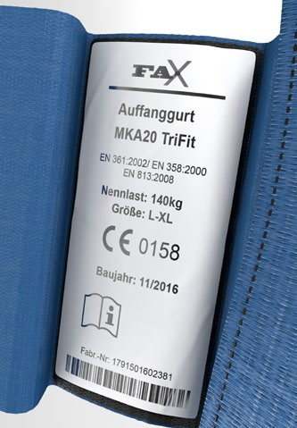
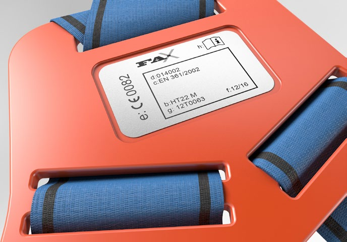
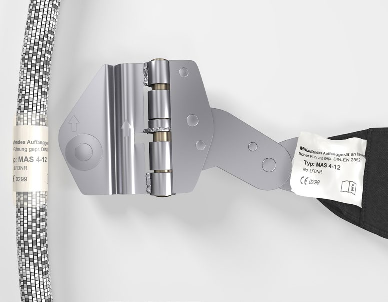

Nach § 2 PSA-Benutzungsverordnung dürfen nur solche persönlichen Schutzausrüstungen (PSA) gegen Absturz ausgewählt, bereitgestellt und benutzt werden, die den Bedingungen für das Inverkehrbringen von persönlichen Schutzausrüstungen entsprechen.
Diese Bedingungen sind in der europäischen PSA-Verordnung 2016/425 (Verordnung (EU) 2016/425 des europäischen Parlaments und des Rates vom 9. März 2016 über persönliche Schutzausrüstungen und zur Aufhebung der Richtlinie 89/686/EWG des Rates) festgelegt.
PSA gegen Absturz sind in die Risikokategorie III eingestuft (Schutz gegen Risiken, die zu sehr schwerwiegenden Folgen wie Tod oder irreversiblen Gesundheitsschäden führen können). Zum Konformitätsbewertungsverfahren von PSA gegen Absturz gehören eine EU-Baumusterprüfung und die Sicherstellung der Produktionskontrolle durch eine notifizierte Stelle (Produktionsüberwachung oder Qualitätssicherungssystem für den Produktionsprozess).
Hinweis: Die Bedingungen der PSA-Richtlinie 89/686/EWG (Richtlinie des Rates vom 21. Dezember 1989 zur Angleichung der Rechtsvorschriften der Mitgliedstaaten für persönliche Schutzausrüstungen) waren übergangsweise noch bis zum 21.04.2019 anwendbar. EG-Baumusterprüfbescheinigungen können bis längstens zum 20.04.2023 gültig sein.
Der Hersteller erklärt die Übereinstimmung mit den Anforderungen der EU-Verordnung anhand einer EU-Konformitätserklärung und durch die CE-Kennzeichnung auf der PSA gegen Absturz. Diese besteht aus dem Kurzzeichen "CE" und einer vierstelligen Kenn-Nummer der notifizierten Stelle (siehe Abbildung 1).
Der Hersteller hat dafür zu sorgen, dass die EU-Konformitätserklärung für das jeweilige Produkt verfügbar ist. Sie muss entweder dem Produkt beiliegen oder im Internet verfügbar sein.
Ein Muster der EU-Konformitätserklärung ist in Anhang 1 dargestellt.
Es darf nur PSA gegen Absturz bereitgestellt und verwendet werden, die mit einer CE-Kennzeichnung versehen ist.

Abb. 1 Beispiel CE-Kennzeichnung
Zur eindeutigen Identifikation ist die Ausrüstung entsprechend DIN EN 365 und PSA-Verordnung mindestens mit folgenden Angaben deutlich, unauslöschlich und dauerhaft gekennzeichnet:
Die Kennzeichnung der Chargen- oder Seriennummer oder des Herstellungsdatums kann auch durch andere Zeichen vorgenommen werden (siehe Abbildung 2 b). Diese sind in der Gebrauchsanleitung entsprechend zu erläutern.
 |
 |
Abb. 2a Beispiel einer Produktkennzeichnung |
Abb. 2b Beispiel einer Produktkennzeichnung |
Für lösbare Elemente der PSA gegen Absturz (zum Beispiel: mitlaufende Auffanggeräte und deren bewegliche Führung) muss über die Kennzeichnung und Gebrauchsanleitung eine eindeutige Zuordnung sichergestellt ein (siehe Abbildung 3).

Abb. 3 Beispiel einer Kennzeichnung für ein lösbares mitlaufendes Auffanggerät einschließlich
beweglicher Führung. Durch die Typ-Angabe "MAS 4-12" in der Kennzeichnung
der beweglichen Führung und des Auffanggerätes ist eine eindeutige Zuordnung gewährleistet.
Zur Gewährleistung der sicheren Verwendung von PSA gegen Absturz ist jeder Ausrüstung oder jedem Bestandteil eine schriftliche Gebrauchsanleitung in deutscher Sprache beigefügt.